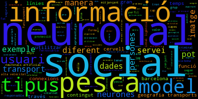
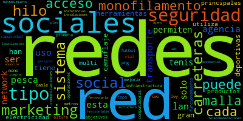
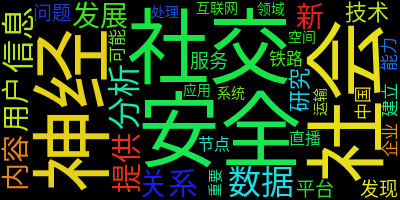

Analyse multilingue
Étude synchronique de l’emploi du terme « réseau » ou « network » en espagnol, catalan et mandarin.
Morgane s'est occupée du catalan...

Tableau par URL
Analyse textométrique
Marko s'est occupé de l'espagnol...

Peng s'est occupé du mandarin...

MorganeCatalanÉtudiante – Paris Nanterre
MarkoEspagnolÉtudiant – Paris Nanterre
Peng CHENChinoisÉtudiant – Paris Nanterre